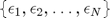
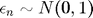
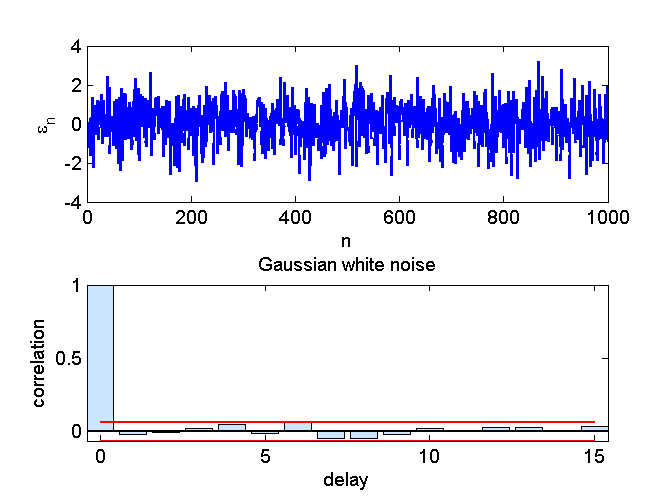
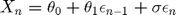
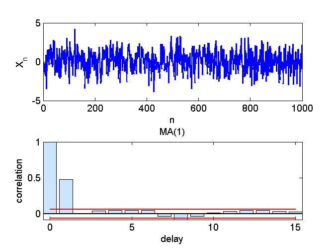
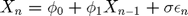
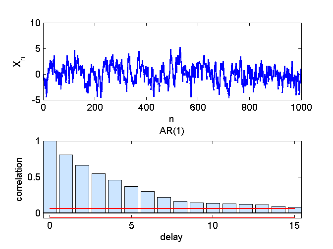

Contents
function demo_autocorrelations()
demo_autocorrelations: autocorrelations for different time series
Parameters for the simulations
maxLag = 15;
N = 1000; % length of simulation
Gaussian white noise


sigma = 1; epsilon = randn(N,1); % plots for GWN nFigure = 0; nFigure = plotResults(nFigure,N,epsilon,maxLag,'\epsilon_n','Gaussian white noise');
MA(1)

theta0 = 0.0; theta1 = 0.8; sigma = 1.0; X(1) = theta0; % initial value = expected value for n = 2:N X(n) = theta0 + theta1*epsilon(n-1) + sigma*epsilon(n); end % plots for MA(1) nFigure = plotResults(nFigure,N,X,maxLag,'X_n','MA(1)');
AR(1)

phi0 = 0.0; phi1 = 0.8; sigma = 1.0; X(1) = phi0/(1-phi1); % initial value = expected value for n = 2:N X(n) = phi0 + phi1*X(n-1) + sigma*epsilon(n); end nFigure = plotResults(nFigure,N,X,maxLag,'X_n','AR(1)');
end
Auxiliary function
function nFigure = plotResults(nFigure,N,X,maxLag,labelY,titleText) nFigure = nFigure + 1; figure(nFigure); subplot(2,1,1); plot(1:N,X); xlabel('n'); ylabel(labelY); subplot(2,1,2); autocorrelationGraph(X,maxLag,0); title(titleText) end